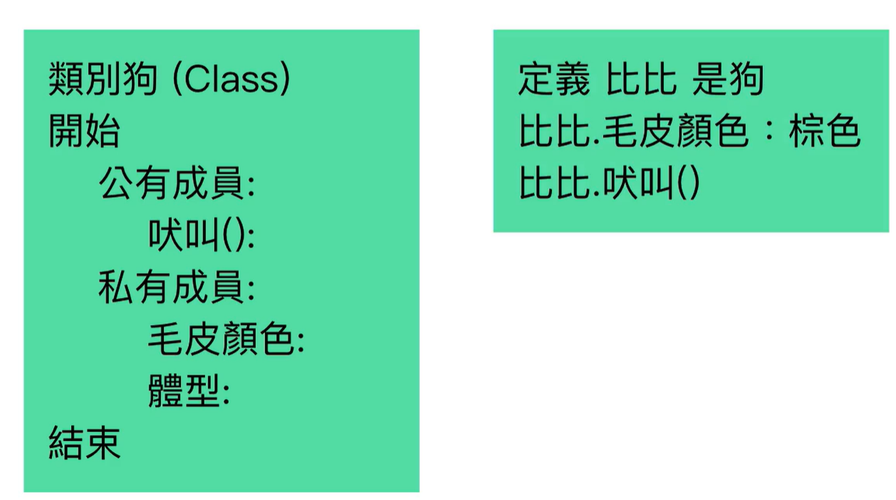

Object-oriented-Programming OOP :
- 狗的印象就是一個 class, 這個印象沒有辦法直接去運用它, 它只是一個想法
- 透過 new 的方法, 可以將狗給實體化出來, 稱為 instance
- 實體化的狗可以定義有甚麼樣的特徵, 色彩, 體型, 實體化的狗才能真的吠叫
- 實體化的狗是從狗這個思想所延伸出來, 稱為繼承
- 繼承的概念就是一個實體, 可以取用另外一個物件的屬性 & 方法
- 屬性: 色彩 & 大小, 方法: 吠叫
原型繼承
- JavaScript 只有一個特性, 它根本基本上都是物件, 任何內容都是以物件的方式來做建立
- JavaScript 並沒有 class 概念, 必須使用原型的方式, 來做出類似 class 的一個方法
- 透過原型繼承, 做出類似類別繼承的一個方法
- JavaScript 雖然沒有 class, 但 ES6 推出了類似 class 的一個建構式的方法
- 注意 ES6 的 class 基本還是屬於 JS 原本的原型繼承, 並不是直接引用其他語言的類別導向